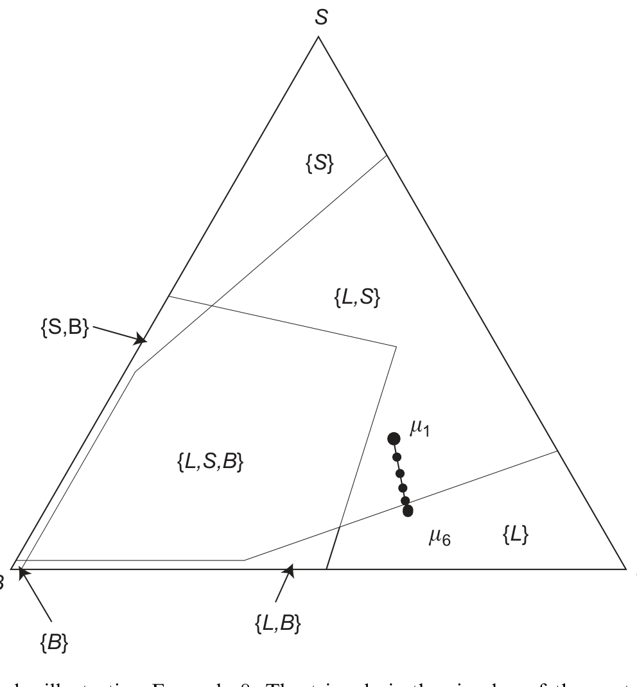
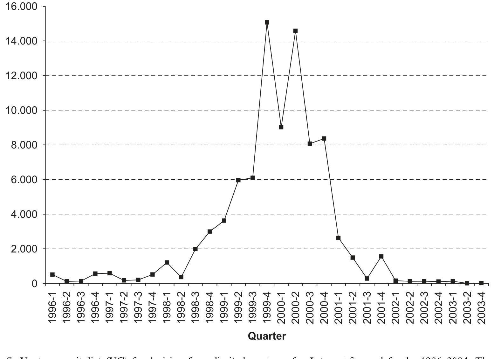
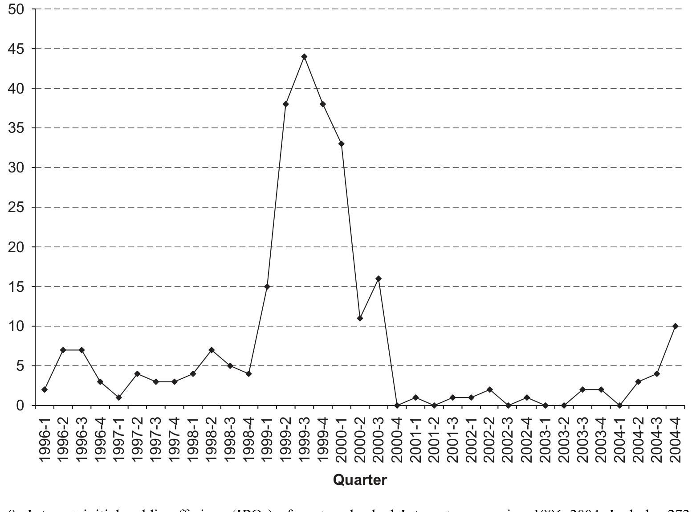
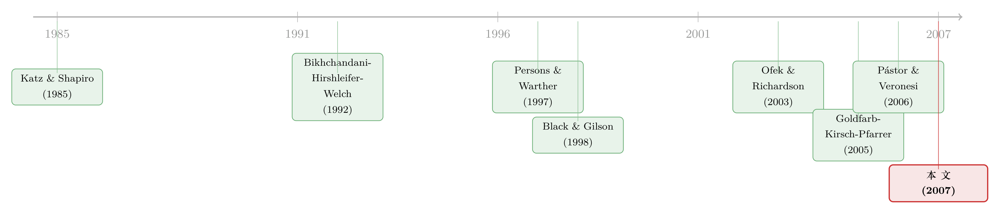

互联网泡沫，错不在「进得太多」，而在「进得太少」？
本文读的是 Goldfarb, Kirsch & Miller (2007, Journal of Financial Economics)：作者把关于「互联网泡沫」的常识整个翻了个面。人们都说那是一场「进得太多、烧得太凶」的狂热，但作者用四个被忽略的事实加一个「信念级联 (belief cascade)」模型论证——真正发生的，也许是进得太少。当所有风投都坚信「快速做大 (Get Big Fast)」是唯一正确的打法时，许多本可以「做小而活得好」的创业者，被一套错误的共识劝退在了门外。
1 引言：把问题反过来问
先回忆一个数字。2000 年 3 月 10 日，纳斯达克指数冲到 5,132 点，比 1995 年 8 月 9 日——网景 (Netscape) 上市那天——足足高出了 500% 以上。然后呢？到 2002 年 9 月 23 日，它收在 1,185 点。十八个月里，$4.4 万亿美元的市值蒸发，其中光是硅谷最大的 150 家公司就丢掉了 $1 万亿。这是工业资本主义史上最大的一次股灾。
故事讲到这里，几乎所有人都会顺着同一条路往下接：那是一场非理性的狂欢，太多不靠谱的公司挤进了市场，太多的钱被烧掉，泡沫破了，尸横遍野——「这下市场该清醒了」。媒体这么写（Cassidy, 2002; Lowenstein, 2004），学术界也大体这么说：互联网股价被过度乐观和事件驱动的非理性推高（Ofek and Richardson, 2003; Lamont and Thaler, 2003）。
但本文三位作者偏不顺着讲。他们抛出一个几乎是挑衅式的标题：Dot Com 时代，会不会其实是「进入得太少」(too little entry)？
这听起来像是诡辩。可你慢慢会发现，它背后藏着一条非常严肃、而且自洽的逻辑链。要把这条链讲清楚，作者先摆出了四个「程式化事实 (stylized facts)」——其中三个是文献里此前没人系统报告过的。
2 四个被忽略的事实
事实一：「快速做大」的信仰是普遍的。 当时的创业界笃信一种叫 Get Big Fast（下称 GBF）的打法：互联网市场存在巨大的「先发优势 (first mover advantage, FMA)」，谁先冲进去、谁先靠烧钱抢下市场份额，谁就能凭借网络效应与规模经济锁定超额的长期回报。这个信念直到 2000 年初它的有效性被证伪，才退潮。
这里有一个很「石川」式的细节：作者把 GBF 信仰的源头，追溯到了学术界自己。规模报酬递增、网络效应、锁定 (lock-in) 这些概念（Arthur, 1996; Shapiro and Varian, 1999）本是严谨的理论，但 Bolton and Heath (2005) 发现，FMA 在商业媒体里被解读得远比它在原始学术文献里要正面。换句话说，一套被「掐头去尾」地传播开的学术理论，酿成了严重的财务后果。
事实二：投资规模的暴起暴落，最集中在互联网和 IT 部门。 整个 VC 行业在 2000 年股灾后都缩水，但互联网相关的 VC 投资跌得更狠，互联网相关的 IPO 几乎直接归零。
事实三：dot com 公司的存活率，并不比别的新兴行业差，甚至更高。 五年存活率逼近 50%。这低于制造业（大约三分之二的新进入者能活过五年——Agarwal and Audretsch, 2001; Dunne, Roberts, and Samuelson, 1988），但匹配甚至超过了其他新兴行业在「初次洗牌」阶段的存活率（Simons, 1995）——后者才是更恰当的对照。
事实四：存活与是否拿到、拿到多少私募股权融资无关。 拿了 VC 钱的公司，和靠其他私人资本起家的公司，存活概率没有显著差别。
这四个事实摆在一起，立刻制造出一种张力。你想想：如果 dot com 真是一场「烂公司太多」的狂热，那活下来的应该寥寥无几（事实三应该被推翻）；如果 VC 真有「选种 + 增值」的本事，那拿了钱的公司就该活得更好（事实四应该被推翻）。可现实是，活下来的不少，而且钱多钱少跟生死无关。
于是一个自然的问题冒出来了：到底是什么力量，能同时生成这四个看起来互相矛盾的事实？
3 识别策略与模型：一场只在 VC 之间传染的「信念级联」
作者的答案是一个借自羊群行为 (herding) 文献的理论模型。它的内核来自经典的信息级联思想——Bikhchandani, Hirshleifer, and Welch (1992) 与 Banerjee (1992)——但作者往里加了两块全新的积木，正是这两块积木让模型能解释「崩盘而非纠错」。
3.1 模型设定
模型里有三类机会：大规模进入 (large-scale entry, L)、小规模进入 (small-scale entry, S)，以及根本不适合 VC 投的机会。每个 VC 评估一个机会，收到一个私人的、有噪声的信号，提示这个机会属于哪一类。
- 如果 VC 判断这个机会回报不够，它就把钱投进无风险债券 (B)；
- 否则，它按自己「最可能」的判断匹配投资规模，造出一个 L 项目或 S 项目。
- 关键约束：只有当 VC 把项目类型和机会类型正确匹配时，投资才赚钱。 一个押注「快速抢份额 + GBF」（即模型里的 L）的投资，当且仅当 GBF 在那个市场里确实是赚钱策略时，才成功。
信息结构是全篇的命门，请慢读这三条：
- 一笔投资做出来时，所有其他 VC 都能看到它的类型（L 还是 S）；
- 但投资者（出资给 VC 的人，metaphor 上既指 IPO 市场的散户、也指 VC 基金的有限合伙人 LP）只能看到 VC「投了项目」还是「买了债」，分不清 L 和 S；
- 盈利信息在两个时点才揭晓：投资后 \(T_1\) 期，全体 VC 才观察到项目的盈利性；项目要 \(T_2\) 期才成熟、利润才被投资者看到。VC 按利润的一个百分比拿报酬。
作者点明，正是这套结构里的三个元素生成了全部结果：(1) VC 之间的信息不对称（看不到彼此的私人信号）；(2) VC 与投资者之间的信息不对称（投资者看不清项目类型，且滞后才知道结果）；(3) VC 的有限责任 (limited liability)——它在 VC 与投资者的激励之间打入了一道楔子。其中 (2) 和 (3) 是对级联文献的新贡献。
3.2 级联是怎么形成的——一步步看
把 VC 的信念写成一个概率向量，落在一个三角形（单纯形 simplex）上：
模型从一个已经偏向 L 的先验出发：\(m_1(L)=\tfrac12\)，\(m_1(S)=m_1(B)=\tfrac14\)。作者坦白说，这个偏向并非凭空设定，而是用来代表历史上那些「赛前协调 (pre-game coordination)」的力量——即上一节讲的 FMA 学说、媒体渲染等，已经把所有人的信念往「机会多半是大规模」这一侧推了一把。
接着是逻辑的核心。每个 VC 看到同行的投资决策，会推断这些决策背后藏着同行的私人信号。 如果同行的投资里浮现出一个一致的模式（比如连续几笔都是 L），那么单个 VC 就越来越倾向于折扣掉自己那个与模式相悖的私人信号。一旦这个模式足够一致——在连续若干笔 L 投资之后——同行传递的信息就彻底淹没了私人信号里的信息。
这就是信念级联的诞生：到这一刻，VC 的决策不再依赖自己的私人信号。在图 1 里，先验点 \(m_1\) 落在标着 \(\{L,S\}\) 的区域（此时 VC 看到 S 信号才投 S，否则投 L）；随着一连串 L 信号实现，后验信念 \(m_1\to m_6\) 一路滑向右下角标着 \(\{L\}\) 的区域。一旦进入 \(\{L\}\) 区，任何 VC 都会押 L，不管它自己的私人信号是什么。 这就是 L 级联。

Figure 1: Primary cascade, illustrating Example 8. The triangle is the simplex of the venture capitalists’ (VCs’)
在这个区域里，VC 会犯两类错误：把一个 S 机会误判成 L，把一个根本不值得投的机会也误判成 L。于是——模型预测——级联会伴随 VC 投入的放大。这恰好对上了事实二里互联网投资规模的暴涨。
那级联会不会自我纠正？会，但有条件。结果信息一定压倒「从投资决策里推断出来的信息」，所以这种「原生级联 (primary cascade)」只能在 VC 还没观察到彼此投资结果时维持。命题 10（在附录里）说：当 VC 观察到投资结果的滞后 \(T_1\) 足够大时，原生级联就会发生。直觉很朴素：信息来得越晚，错误的共识就能撑得越久。
3.3 真正关键的一步：为什么是「崩盘」而不是「纠错」
到这里，模型还只解释了「为什么大家一窝蜂投 GBF」。但故事最妙的反转在后头。
假设时间走到 2000 年初，盈利信息终于揭晓，VC 们学到了一个事实：GBF 对大多数项目并不是最优策略，更稳妥的非 GBF 打法（S）才对。 按理说，理性的 VC 应该「改打法」——从 L 切换到 S，纠正之前的错误，继续投资。
可现实里发生的是整个市场停摆，互联网 IPO 几乎归零（事实二）。为什么是崩，而不是改？
答案藏在第二、三块新积木里。投资者（IPO 散户 / LP）看不清 VC 到底在投 L 还是 S，又有 VC 的有限责任在作祟——VC 拿的是利润的分成，亏了有下限保护，于是它有动机比投资者希望的更激进地去赌 L。当 L 级联结束、投资者意识到「VC 可能还在过度激进地投 L、而不是切换到更合适的策略」时，他们宁可直接掐断对 VC 的供血，也不愿意冒险继续出钱。结果就是一次崩盘，而非一次温和的纠错。
这正是本文相对于最接近的前辈 Persons and Warther (1997) 的增量。后者也讲了金融创新采用中的「繁荣—萧条」周期：高收益企业先采用，给后来者发出噪声信号，信号越聚越多、采用面越铺越广，直到一个足够差的信号让进程停下，后来者事后看像傻瓜、但当时是理性的。本文的不同在于引入了两类决策者（VC 与投资者），由此造出一个「逃出萧条周期」的机制——而 Persons-Warther 的模型里没有这一层。
4 数据
作者用了两套数据。
一是 Venture Economics 数据库，用来刻画 VC 投资与募资的时间序列。图 7 画的是互联网主题基金 1996–2004 年从 LP 处募资的规模，图 8 画的是风投支持的互联网公司同期的 IPO 数量（含 272 家）——两张图把事实二的「暴起暴落」摆得清清楚楚。

Figure 7: Venture capitalist (VC) fundraising from limited partners for Internet-focused funds, 1996–2004. The

Figure 8: Internet initial public offerings (IPOs) of venture-backed Internet companies, 1996–2004. Includes 272
二是 Goldfarb, Kirsch, and Pfarrer (2005) 首次引入的 Dot Com 创业公司数据集：它来自 1998–2002 年间向同一家 VC 递交商业计划书的公司，这些公司被一直追踪到 2004 年，原始材料保存在 Business Plan Archive。这套数据有一个极其难得的优点——它不是按「成功」（拿到 VC 融资或上市）来筛选样本的，因此它捕捉到了在「是否追求 GBF」这件事上的巨大变异。正因为没有幸存者偏差，作者才能用它去检验 GBF 策略到底可不可行，并测出每多投一美元私募股权，对退出（失败）风险的边际效应。
5 主要结果
把模型和数据合起来，作者要论证两件事：GBF 对多数互联网创业是个坏策略；以及由此推出的「进入太少」假说。
第一，GBF 是个普遍被误用的策略。 这一点同时被理论（FMA 的微妙条件在商业实践中被粗暴套用）和外部证据支持。Hendershott (2004) 分析了 435 家以上 dot com 风投标的的财务表现，发现 1995–2000 年每投入 dot com 的 $1.00 VC 资金，到 2001 年底值 $1.80——看似正回报，但他指出这几乎全部由 1995–1997 年间投进少数几家公司的钱贡献。本文与之互补：作者把多数 1990 年代后期的 VC 投资归为「失策」，并把错误归因到一个具体的信念——GBF。
第二，也是逻辑的落点——「进入太少」。 如果 GBF 对大多数潜在进入者并非利润最大化的策略，而它又是当时的普遍共识，那么很多「决定不进入」的选择，都是建立在错误假设之上的。也就是说，本该有更多公司被创立出来去商业化互联网，却因为「不烧大钱做大就别玩」的共识被劝退了。进入太少，自然会让真正进来的那批公司存活率偏高——这正是事实三。
而事实四（存活与私募融资无关）也被同一套逻辑收编。常识会预期：资本和 VC 带来的专业能力应提升存活率，于是私募投资规模与存活应正相关；产业演化文献（Klepper, 2002; Buenstorf and Klepper, 2005）也假设更高效的企业以更大规模进入、从而活得更久。但本文给出三个抵消力量：(1) GBF 必然要求大笔融资，钱本身确有正面作用；(2) 一个先用 GBF 的进入者会吓退同样信奉 GBF 的潜在竞争者，帮自己避开竞争；(3) 一旦市场崩盘（而非纠错），后来的小进入者拿不到钱——这反而抬高了先行者的存活率。如果 GBF 这个策略错误足够严重到压过这些力量，我们就该看到私募投资与存活之间是非正的关系。事实四，恰与「GBF 有害」相容。
作者很克制地把自己的工作定位为「增强而非推翻」既有认知。他们不否认网络效应、VC 选种与增值这些理论本身的逻辑；他们说的是——在 dot com 这个特定情境里，这些机制被一场 GBF 信念级联压倒了。这种「不掀桌、只补一块拼图」的姿态，反而让结论更可信。
6 文献脉络
把这篇论文放回它生长的土壤，会看到三股水流在 2000 年代中期汇到了一起。
第一股，是网络效应与先发优势的产业组织理论。从 Katz and Shapiro (1985) 的网络外部性、David (1985) 的 QWERTY 故事、到 Arthur (1989, 1996) 的递增报酬与锁定，再到 Lieberman and Montgomery (1988, 1998) 把 FMA 的成立条件讲清楚——这股水流提供了 GBF 的「理论原料」。本文的独到之处，是去追问这套理论如何被误用进了商业实践（Bolton and Heath, 2005）。
第二股，是信息级联与羊群行为。Bikhchandani, Hirshleifer, and Welch (1992) 和 Banerjee (1992) 奠基，Devenow and Welch (1996)、Hirshleifer and Teoh (2003) 做综述。本文站在这条线上，但加了「多层决策者 + 有限责任」两块新积木——其精神最接近 Persons and Warther (1997) 的金融创新采用模型。
第三股，是Dot Com 泡沫本身的实证。Ofek and Richardson (2002, 2003)、Cooper, Dimitrov, and Rau (2001)、Lamont and Thaler (2003) 大多把行情归于非理性；而 Pástor and Veronesi (2006) 则质疑非理性的存在、主张那反映的是对个别商业模式存活性的高度不确定。本文与后者气味相投：作者论证，GBF 共识之所以能传播开，恰恰因为「GBF 到底行不行」在 2000 年初之前是不可知的。再往外，是把 VC 与 IPO 市场连起来的「再循环 (recycling)」文献（Black and Gilson, 1998; Gompers and Lerner, 2001; Inderst and Muller, 2004; Michelacci and Suarez, 2004）。

本文的位置，就在这三股水流的交汇处：它用一个级联模型，把「泡沫实证」「羊群理论」「产业组织」缝合成了一个统一的解释。（关于「理性人也能亲手吹起泡沫」这条线，可参见《怕的不是亏钱，是「跟大家一起穷」——理性人如何亲手吹起一个泡沫》；关于 VC 与 LP 之间那道信息与激励的裂缝，可参见《把名字从名单上划掉：当「透明」成了顶级 VC 拒绝公募资金的理由》。）
7 评论与延伸（Q&A + 研究方向）
(a) 几个可能的疑问
Q：「进入太少」会不会只是一个无法证伪的反事实？我们怎么知道「本该有更多公司」？
这确实是全篇最脆弱的一环。作者的论证是间接的：高存活率（事实三）+ 存活与融资无关（事实四）共同指向「进来的那批人质量不差、且没被资本规模决定生死」，再叠加「GBF 是被误用的共识」，逻辑上推出「边际上有人被错误劝退」。但「太少」相对于哪个最优基准，模型并没有给出一个可度量的数量。它更像一个可信的叙事，而非一个被点估计钉死的因果量。
Q：这和「泡沫」「非理性繁荣」的标准说法到底差在哪？
标准说法的主语是「太多非理性资金 + 太多烂公司」；本文的主语是「一个错误但理性的共识」。在本文里，每个 VC 的每一步都是贝叶斯理性的——级联不是因为谁犯傻，而是因为私人信号被同行行为合理地淹没了。所以它解释的不是「为什么价格高」，而是「为什么资本如此集中地涌向一种打法、又如此整齐地撤退」。
Q：事实三说存活率近 50%，可这明明低于制造业的三分之二，凭什么算「高」？
关键在选对照组。和成熟制造业比，50% 是低的；但和其他新兴产业在「初次洗牌期」比（Simons, 1995），50% 是匹配甚至偏高的。dot com 是个新生行业，拿它跟同样处在襁褓期的行业比，才公平。作者明确选了后一个基准。
Q：「崩盘而非纠错」真的需要有限责任吗？换个假设会不会照样崩？
有限责任在模型里负责制造 VC 与投资者之间的激励楔子：VC 有动机过度赌 L，投资者知道这一点，于是在信息揭晓后选择「断供」而非「容忍切换」。如果没有这道楔子，投资者大可以继续出钱、让 VC 改投 S，市场就会纠错而非崩盘。所以这块积木不是装饰，是「崩 vs. 改」分岔的开关——也正是它把本文与 Persons-Warther (1997) 区分开。
Q：样本来自「向同一家 VC 递交计划书」的公司，这会不会本身就是一种选择？
会，但方向可能反而有利。Goldfarb, Kirsch, and Pfarrer (2005) 论证这批数据对互联网创业的总体是有代表性的，且没有按成功事件（拿钱、上市）筛选——这正是它能测「GBF 变异」和「每一美元融资的边际效应」的前提。当然，「递交过计划书」本身意味着这些人至少动过创业的念头，真正「被劝退到从没递交」的那批人，恰恰是不在样本里的——而他们正是「太少」假说的主角。这是数据无法直接触及的盲区。
Q：Hendershott (2004) 说 dot com 投资整体回报为正（\$1→\$1.80），这不和「多数投资失策」矛盾吗？
不矛盾，因为那 80% 的正回报几乎全由 1995–1997 年的少数几笔贡献。本文看的是更广的样本、且看存活而非回报。两者合起来反而拼出一幅更完整的图：1997 年之后被追逐的机会，对 GBF 而言是错的，但其中不少作为「小而美」的生意仍然可行。
(b) 几个可能的研究问题与提案
1. 把「信念级联」从 VC 搬到公司债的一级市场。 【经济故事】发行人和承销商对「什么样的契约结构 / 久期 / 评级现在卖得动」也存在私人信号，而后来者会观察前面的成功发行去模仿——这正是级联的土壤。一个 GBF 式的共识（比如「现在就该发长债 / 发某种结构」）可能让信用供给过度集中于某一类发行，再在风险揭晓时整体冻结。 【可行性】中。Mergent FISD + TRACE 能刻画发行结构与二级流动性的时序，识别上可借鉴本文「连续同类决策 → 共识 → 突停」的模式，难点在于把「私人信号被淹没」与「单纯的基本面共同冲击」区分开。
2. 外资持有人是级联的放大器还是减震器？ 【经济故事】当一类资产的边际买家越来越多是「只看别人在买什么」的外部投资者时，私人信号的权重被进一步稀释，级联应更易形成、也更易在撤退时变成崩盘。 【可行性】中。可用跨国债券持有数据（如 TIC、ECB SHS）做面板，识别策略上可利用指数纳入等外生的「可投资度」变化作为外资份额的工具。诚实地说，把「级联」与「相关需求冲击」分开仍是硬骨头。
3. 「太少进入」的可度量版本：用拒绝样本估计反事实进入率。 【经济故事】本文最大的软肋是「太少」无法量化。若能拿到一家 VC 完整的「收到—拒绝」决策流（含被拒项目的事后存活），就能估计「若共识不偏向 GBF，多少被拒/被劝退的小项目本可成活」。 【可行性】低到中。Business Plan Archive 这类数据极稀缺，且需要被拒企业的长期追踪；识别上要假设拒绝规则可分解为「GBF 偏好」与「真实质量」两部分——很难，但 doable 的雏形已被本文的数据结构勾勒出来。
4. 信用市场版的「崩而非改」：有限责任 + 委托代理下的供血断裂。 【经济故事】基金经理（类比 VC）拿的是带下限保护的业绩分成，出资的 LP / 散户看不清持仓。当某类信用资产的回报揭晓为差时，资金方可能整体断供而非要求基金切换——对应公司债基金在压力期的「火线赎回」。 【可行性】中高。债基持仓（N-PORT）+ 资金流数据可观测，已有大量关于债基脆弱性的实证基础可对接（相关脉络可参见《加息前夜的悄然撤离：当「算不准的净值」反而成了基金的减震器》）。
我的判断。 这篇论文的贡献，与其说在实证，不如说在视角的翻转和理论的缝合：它把一个被讲烂了的「泡沫故事」重新组织成一个内部自洽、且对级联文献有真增量（多层决策者 + 有限责任 → 崩盘而非纠错）的解释。四个事实里，事实三、四是扎实的经验贡献，尤其「存活与融资无关」相当反直觉、也相当有冲击力。
对识别，我最大的保留还是「太少」这个核心命题本身——它是从存活率与融资—存活无关性间接推断出来的，缺一个可度量的反事实基准；而样本天然无法覆盖「从没动过创业念头」的那批人，恰恰是假说的主角。模型也是定性的（刻画了级联会发生的条件，但没把 Dot Com 的具体路径结构性地估出来）。
后续我最想看到的，是有人把这套「私人信号被同行行为淹没 → 共识 → 因有限责任而崩盘」的机制，搬到一个结果可观测、撤退可计量的市场里去检验——公司债的发行与基金供血，看起来就是天然的试验场。
参考文献
- Arthur, B. (1989). Competing technologies, increasing returns, and lock-in by historical events. Economic Journal 99(394), 116–131.
- Arthur, B. W. (1996). Increasing returns and the new world of business. Harvard Business Review 74(4), 100–109.
- Agarwal, R., Audretsch, D. B. (2001). Does entry size matter? The impact of the life cycle and technology on firm survival. Journal of Industrial Economics 49(1), 21–43.
- Banerjee, A. V. (1992). A simple model of herd behavior. Quarterly Journal of Economics 107(3), 797–817.
- Bikhchandani, S., Hirshleifer, D., Welch, I. (1992). A theory of fads, fashion, custom, and cultural changes as informational cascades. Journal of Political Economy 100(5), 992–1026.
- Bikhchandani, S., Hirshleifer, D., Welch, I. (1998). Learning from the behavior of others: conformity, fads, and informational cascades. Journal of Economic Perspectives 12(3), 151–170.
- Black, B. S., Gilson, R. J. (1998). Venture capital and the structure of capital markets: banks versus stock markets. Journal of Financial Economics 47(3), 243–277.
- Bolton, L. E., Heath, C. (2005). Believing in first mover advantage. Working paper, The Wharton School, University of Pennsylvania.
- Cooper, M. J., Dimitrov, O., Rau, P. R. (2001). A rose.com by any other name. Journal of Finance 56(6), 2371–2388.
- David, P. (1985). Clio and the economics of QWERTY. American Economic Review 75(2), 332–337.
- Dunne, T., Roberts, M. J., Samuelson, L. (1988). Patterns of firm entry and exit in U.S. manufacturing industries. Rand Journal of Economics 19(4), 495–515.
- Goldfarb, B. D., Kirsch, D., Pfarrer, M. D. (2005). Searching for ghosts: business survival, unmeasured entrepreneurial activity, and private equity investment in the Dot-Com Era. Working paper, University of Maryland.
- Gompers, P. A., Lerner, J. (2001). The venture capital revolution. Journal of Economic Perspectives 15(2), 145–168.
- Hendershott, R. (2004). Net value: wealth creation (and destruction) during the internet boom. Journal of Corporate Finance 10(2), 281–299.
- Inderst, R., Muller, H. M. (2004). The effect of capital market characteristics on the value of start-up firms. Journal of Financial Economics 72(2), 319–356.
- Katz, M. L., Shapiro, C. (1985). Network externalities, competition, and compatibility. American Economic Review 75(3), 424–440.
- Klepper, S. (2002). Firm survival and the evolution of oligopoly. Rand Journal of Economics 33(1), 37–61.
- Lamont, O. A., Thaler, R. H. (2003). Can the market add and subtract? Mispricing in tech stock carve-outs. Journal of Political Economy 111(2), 227–268.
- Lieberman, M. B., Montgomery, D. B. (1988). First-mover advantages. Strategic Management Journal 9, 41–58.
- Michelacci, C., Suarez, J. (2004). Business creation and the stock market. Review of Economic Studies 71(2), 459–481.
- Ofek, E., Richardson, M. (2003). DotCom mania: the rise and fall of internet stock prices. Journal of Finance 58(3), 1113–1137.
- Pástor, L., Veronesi, P. (2006). Was there a Nasdaq bubble in the late 1990s? Journal of Financial Economics 81(1), 61–100.
- Persons, J. C., Warther, V. A. (1997). Boom and bust patterns in the adoption of financial innovations. Review of Financial Studies 10(4), 939–967.
- Shapiro, C., Varian, H. R. (1999). Information Rules: A Strategic Guide to the Network Economy. Harvard Business School Press, Boston.